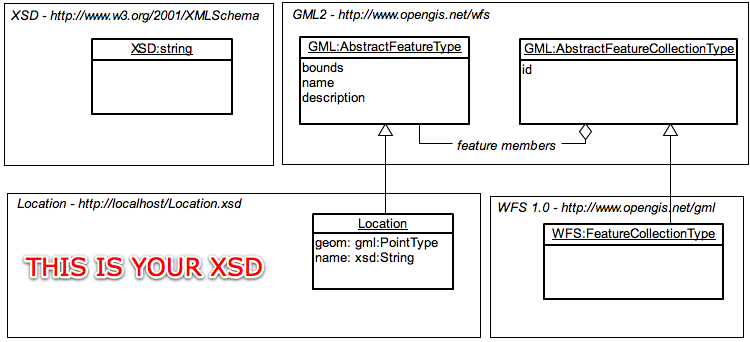
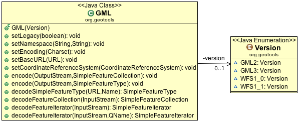
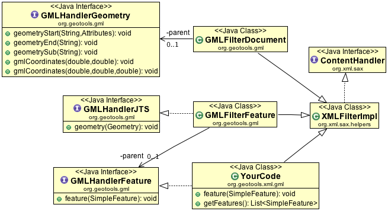
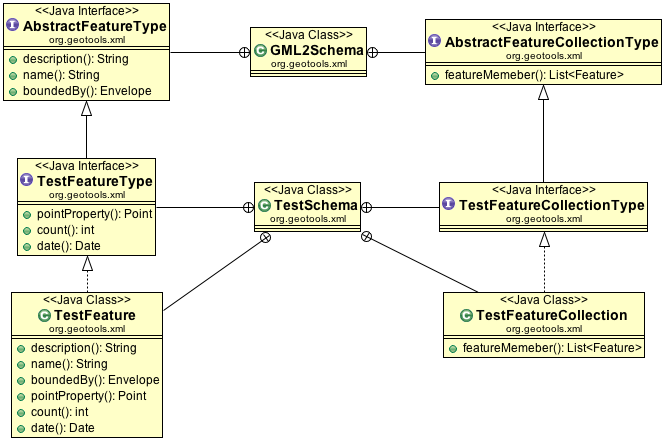

Geometry¶
XML Documents come in two parts an XSD file representing the FeatureType; and an XML file with the actual features.
Here is what that looks like with a simple example:
If it helps you can think of the XSD file as being similar to the header of a shapefile; it documents what the contents mean. The XML file is the actual contents. Why are they separate? Because you may have several documents that contain the same kind of data.
References:
GML Utility Class¶
GeoTools has access to several interesting parsing technologies as earlier noted. The GML utility class gathers these up in a single spot for casual use.
While the GML utility class is useful; you may find the need to go under the hood and make use of some of the parsing technologies directly for advanced use.
As indicated the utility class is set up to work with the following versions:
- GML_2
- GML_3
- WFS1_0
- WFS1_1
The examples on this page will start off with the use of the GML class where appropriate.
GML2 Encoding¶
Schema¶
Encoding FeatureType into an XSD file:
SimpleFeatureType TYPE = DataUtilities.createType("Location", "geom:Point,name:String");
GML encode = new GML(Version.GML2);
encode.setBaseURL(new URL("http://localhost/"));
encode.encode(out, TYPE);
This writes out an XSD file for the FeatureType and can be combined with the WFS 1.0 XSD file when writing feature collections.
FeatureCollection¶
To write out a SimpleFeatureCollection to match:
GML encode = new GML(Version.WFS1_0);
encode.setNamespace("geotools", "http://geotools.org");
encode.encode(out, featureCollection);
The namespace refers to the XSD file generated earlier (or any other XSD file you happen to have). The contents of the FeatureCollection are written out as is; and you may get a failure if their name does not match up with the XSD file.
In this case we needed to use WFS1_1 when writing out our features (as GML2 does not provide the concept of a feature collection on its own). If you have your own custom schema that extends GML2 AbstractFeatureCollection you can use the parser technologies directly in order to read/write the content (it is not something we have added to this GML utility class yet).
GML2 Encoding Example¶
Here is a complete example:
SimpleFeatureType TYPE = DataUtilities.createType("location", "geom:Point,name:String");
File locationFile = new File("location.xsd");
locationFile = locationFile.getCanonicalFile();
locationFile.createNewFile();
URL locationURL = locationFile.toURI().toURL();
URL baseURL = locationFile.getParentFile().toURI().toURL();
FileOutputStream xsd = new FileOutputStream(locationFile);
GML encode = new GML(Version.GML2);
encode.setBaseURL(baseURL);
encode.setNamespace("location", locationURL.toExternalForm());
encode.encode(xsd, TYPE);
xsd.close();
WKTReader2 wkt = new WKTReader2();
List<SimpleFeature> collection = new LinkedList<SimpleFeature>();
collection.add(SimpleFeatureBuilder.build(TYPE, new Object[] { wkt.read("POINT (1 2)"),"name1" }, null));
collection.add(SimpleFeatureBuilder.build(TYPE, new Object[] { wkt.read("POINT (4 4)"),"name2" }, null));
ByteArrayOutputStream xml = new ByteArrayOutputStream();
GML encode2 = new GML(Version.GML2);
encode2.setLegacy(true);
encode2.setBaseURL(baseURL);
encode2.setNamespace("location", "location.xsd");
encode2.encode(xml, new ListFeatureCollection(TYPE, collection));
xml.close();
String gml = xml.toString();
WFS1.0 Encoding¶
The Web Feature Server 1.0 specification extends GML2. You can work with this format using the GML Utility class.:
GML encode = new GML(Version.WFS1_0);
encode.setNamespace("geotools", "http://geotools.org");
encode.encode(out, collection);
FeatureTransformer¶
You can read how to use FeatureTransformer directly; however we also provide access to this class using the GML Utility class:
GML encode = new GML(Version.GML2);
encode.setNamespace("location", "http://localhost/location.xsd");
encode.setLegacy(true);
encode.encode(out, collection);
This method depends on you doing everything exactly right as it blindly writes out a document referring to an XSD file that may or may not exist. It is a good choice when encoding content against a WFS DescribeFeatureType URL for example.
Internally you can use the GMLTransform code directly for greater control over this process:
SimpleFeatureType TYPE = DataUtilities.createType("urn:org.geotools.xml.examples", "location", "geom:Point,name:String");
TYPE.getUserData().put("prefix", "ex");
WKTReader2 wkt = new WKTReader2();
List<SimpleFeature> collection = new LinkedList<SimpleFeature>();
collection.add(SimpleFeatureBuilder.build(TYPE, new Object[] { wkt.read("POINT (1 2)"), "name1" }, null));
collection.add(SimpleFeatureBuilder.build(TYPE, new Object[] { wkt.read("POINT (4 4)"), "name2" }, null));
SimpleFeatureCollection featureCollection = new ListFeatureCollection(TYPE, collection);
FeatureTransformer transform = new FeatureTransformer();
transform.setEncoding(Charset.defaultCharset());
transform.setIndentation(4);
transform.setGmlPrefixing(true);
// define feature information
final SimpleFeatureType schema = featureCollection.getSchema();
String prefix = (String) schema.getUserData().get("prefix");
String namespace = schema.getName().getNamespaceURI();
transform.getFeatureTypeNamespaces().declareDefaultNamespace(prefix, namespace);
transform.addSchemaLocation(prefix, namespace);
String srsName = CRS.toSRS(schema.getCoordinateReferenceSystem());
if (srsName != null) {
transform.setSrsName(srsName);
}
// define feature collection
transform.setCollectionPrefix("col");
transform.setCollectionNamespace("urn:org.geotools.xml.example.collection");
// other configuration
transform.setCollectionBounding(true); // include bbox info
ByteArrayOutputStream xml = new ByteArrayOutputStream();
transform.transform(featureCollection, xml);
xml.close();
System.out.println(xml.toString());
Note
While this method is fast; you do have to set things up exactly or the output will be invalid.
Notes:
Application Schema
There is no such thing as a “GML” document; you need to created your own XML Schema. Your XML Schema will extend GML concepts like AbstractFeature and define specific concepts from your application - like ROAD, RIVER, CITY etc...
This line is where you tell the Transform about your XML Schema:
ft.getFeatureNamesapces().declarePrefix("myns","http://somewhere.org");
The “myns” prefix is supposed to line up with an XML Schema document which you have defined to describe your document.
SRS
Internally in GeoTools we use real CoordianteReferenceSystem instances to record what the numbers mean. In GML they use a simple string called “SRS” (ie Spatial Reference System).:
transform.setSrsName( "EPSG:4326" );
The CRS utility class has a method that can help you determine a good srsName:
String srsName = CRS.toSRS(schema.getCoordinateReferenceSystem();
We also have an email from foerster@itc.nl with an example:
SimpleFeatureType ft = fc.getSchema();
FeatureTransformer tx = new FeatureTransformer();
// set the SRS for the entire featureCollection.
String srsName = CRS.toSRS(ft.getCoordinateReferenceSystem(), true);
tx.setSrsName(srsName);
// set the namespace and the prefix
String namespaceURI = ft.getName().getNamespaceURI();
tx.getFeatureTypeNamespaces().declareNamespace(ft, "wps", namespaceURI);
// also work-around, get the schema of the featureType
Schema s = SchemaFactory.getInstance(namespaceURI);
// define a schemaLocation and allow thereby validation!
tx.addSchemaLocation(namespaceURI, s.getURI().toASCIIString());
tx.transform(fc, out);
GML2 Parsing¶
Schema¶
You can parse the XSD document (useful when you want to make additional features):
GML gml = new GML(Version.WFS1_0);
gml.setCoordinateReferenceSystem( DefaultGeographicCRS.WGS84 );
Name typeName = new NameImpl("http://www.openplans.org/topp", "states");
SimpleFeatureType featureType = gml.decodeSimpleFeatureType(schemaLocation, typeName );
XSD files can have more then one entry; so you need to explicitly ask for the one you want. We also need to know the CoordinateReferenceSystem of the content.
You can make use of Configuration and the GTXML class to directly read out the schema information:
// assume we are working from WFS 1.1 / GML3 / etc...
final QName featureName = new QName(typeName.getNamespaceURI(), typeName.getLocalPart());
String namespaceURI = featureName.getNamespaceURI();
String uri = schemaLocation.toExternalForm();
Configuration wfsConfiguration = new org.geotools.gml3.ApplicationSchemaConfiguration(
namespaceURI, uri);
FeatureType parsed = GTXML.parseFeatureType(wfsConfiguration, featureName, crs);
// safely cast down to SimpleFeatureType
SimpleFeatureType schema = DataUtilities.simple(parsed);
Here is a slightly more involved example using a custom configuration:
// more involved example showing a custom Configuration
final QName featureName = new QName(typeName.getNamespaceURI(), typeName.getLocalPart());
String namespaceURI = featureName.getNamespaceURI();
String uri = schemaLocation.toExternalForm();
// Step 1: Parse schema using XSD
XSD xsd = new org.geotools.gml2.ApplicationSchemaXSD(namespaceURI, uri);
// Step 2: custom configuration
Configuration configuration = new Configuration(xsd) {
{
addDependency(new XSConfiguration());
addDependency(new org.geotools.gml2.GMLConfiguration());
}
protected void registerBindings(java.util.Map bindings) {
// we have no special bindings
}
};
FeatureType parsed = GTXML.parseFeatureType(configuration, featureName, crs);
// safely cast down to SimpleFeatureType
SimpleFeatureType schema = DataUtilities.simple(parsed);
FeatureCollection¶
You can parse out a FeatureCollection in one gulp:
GML gml = new GML(Version.WFS1_0);
SimpleFeatureCollection featureCollection = gml.decodeFeatureCollection(in);
Or for a more responsive user experience (or to work with large content) you can parse one feature at a time:
URL url = TestData.getResource(this,"states.xml");
InputStream in = url.openStream();
GML gml = new GML(Version.GML3);
SimpleFeatureIterator iter = gml.decodeFeatureIterator(in);
while( iter.hasNext() ){
SimpleFeature feature = iter.next();
...
}
WFS1.0¶
The Web Feature Server 1.0 specification extends GML. You can work with this format using the GML Utility class.:
GML gml = new GML(Version.WFS1_0);
SimpleFeatureCollection featureCollection = gml.decodeFeatureCollection(in);
SAX¶
An alternative to the GML utility class is to directly handle the SAX events yourself.
If you have an existing SAX based parser you can make use of ContentHandlers defined by GeoTools in order to feed Geometries into your own parser.
- GMLHandlerJTS
- GMLHandlerGeometry
- GMLHandlerFeature
To make matters exciting the ContentHandler classes are defined at different “levels” for GML.
| Level | Interface | Implementation | Description |
|---|---|---|---|
| 1 | (raw sax) | GMLFilterDocument | Alerts for GML types |
| 2 | GMLHandlerJTS | GMLHandlerGeometry | GML events into OGC simple types |
| 3 | GMLHandlerFeature | (your code) | Implement accept parsed features. |
Here is what this looks like in the context of your own code.
You can see that in order to use literal JTS Geometries the SAX Filter parser will need to implement GMLHandlerFeature:
public class YourCode extends XMLFilterImpl implements GMLHandlerFeature {
private List<SimpleFeature> features = new ArrayList<SimpleFeature>();
public void feature(SimpleFeature feature) {
features.add(feature);
}
public List<SimpleFeature> getFeatures() {
return features;
}
}
Then we can get down to actual parsing:
YourCode handler = new YourCode();
GMLFilterFeature filterFeature = new GMLFilterFeature(handler);
GMLFilterGeometry filterGeometry = new GMLFilterGeometry(filterFeature);
GMLFilterDocument filterDocument = new GMLFilterDocument(filterGeometry);
// parse xml
XMLReader reader = XMLReaderFactory.createXMLReader();
reader.setContentHandler(filterDocument);
reader.parse(input);
List<SimpleFeature> features = handler.getFeatures();
While the above example is good for understanding how the pieces fit together; Java has introduced inner classes allowing us to do this work in a single example:
class InlineHandler extends XMLFilterImpl implements GMLHandlerFeature {
List<SimpleFeature> features = new ArrayList<SimpleFeature>();
public void feature(SimpleFeature feature) {
features.add(feature);
}
}
InlineHandler inlineHandler = new InlineHandler();
GMLFilterFeature filterFeature = new GMLFilterFeature(inlineHandler);
GMLFilterGeometry filterGeometry = new GMLFilterGeometry(filterFeature);
GMLFilterDocument filterDocument = new GMLFilterDocument(filterGeometry);
// parse xml
XMLReader reader = XMLReaderFactory.createXMLReader();
reader.setContentHandler(filterDocument);
reader.parse(input);
List<SimpleFeature> features = inlineHandler.features;
XDO¶
Although it is not commonly used now that GTXML Configurations are available; we do have the earlier prototype XDO available.
Here is an example of parsing a feature type:
XMLReader reader = XMLReaderFactory.createXMLReader();
URI schemaLoc = new java.net.URI(
"http://giswebservices.massgis.state.ma.us/geoserver/wfs?request=describefeaturetype&service=wfs&version=1.0.0&typename=massgis:GISDATA.COUNTIES_POLY");
XSISAXHandler schemaHandler = new XSISAXHandler(schemaLoc);
reader.setContentHandler(schemaHandler);
reader.parse(new InputSource(new URL(schemaLoc.toString()).openConnection().getInputStream()));
SimpleFeatureType ft = GMLComplexTypes.createFeatureType(schemaHandler.getSchema()
.getElements()[0]);
This is a very fast parser, designed to address the limitations of the SAX and DOM technologies. The generation of XML content is also supported.
The “Schema Assisted” design makes use of schema information to allow the handing of new content without additional coding on your part. You can however construct additional bindings (teaching the parser how to produce explicit java beans).
XDO allows you to declare w/ Objects the Schema you are interested in, and how it should be parsed.
- reuse occurs on a schema by schema basis
- You can “generated” a schema explicitly out into code
- Code has been generated for GML2, WFS, and WMS
- Custom documents, based on an extention of a known schema can be parsed
- generated code also includes support for the production of XML documents.
- validation of content is supported
The exciting thing here is that the technology works, is fast, and allows for GML to be used the way it is intended.
GML2 Parsing TestSchema Example¶
To start with we have to understand that GML is not a file format that can be parsed; instead it is a tool box of good ideas you can use when defining your own XML file format.
XML file formats are defined using XSD files such as the following:
<?xml version="1.0" encoding="UTF-8"?>
<schema targetNamespace="http://www.geotools.org/test" xmlns="http://www.w3.org/2001/XMLSchema"
xmlns:test="http://www.geotools.org/test" xmlns:gml="http://www.opengis.net/gml">
<import namespace="http://www.opengis.net/gml" schemaLocation="feature.xsd" />
<complexType name="TestFeatureType">
<complexContent>
<extension base="gml:AbstractFeatureType">
<sequence>
<element name="geom" type="gml:PointPropertyType" />
<element name="count" type="int" />
<element name="date" type="date" />
</sequence>
</extension>
</complexContent>
</complexType>
<element name="TestFeature" type="test:TestFeatureType" />
<complexType name="TestFeatureCollectionType">
<complexContent>
<extension base="gml:AbstractFeatureCollectionType" />
</complexContent>
</complexType>
<element name="TestFeatureCollection" type="test:TestFeatureCollectionType" />
</schema>
The above file defines two new ideas:
- TestFeatureType - it extends the AbstractFeatureType idea from GML
- TestFeatureCollectionType - it extends the AbstractFeatureCollectionType from GML
Here is what that looks like as a UML diagram:
Note
While we cannot parse a GML2 document - nobody can! Since GML2 documents do not exist as a file format. The parser is able to parse an XML file defined by test.xsd above.
Here is an example to parse against the above schema:
<test:TestFeatureCollection xmlns:xsi="http://www.w3.org/2001/XMLSchema-instance"
xmlns:gml="http://www.opengis.net/gml"
xmlns:test="http://www.geotools.org/test"
xsi:schemaLocation="http://www.geotools.org/test test.xsd">
<gml:featureMember>
<test:TestFeature fid="0">
<gml:pointProperty>
<gml:Point><gml:coordinates>0 0</gml:coordinates></gml:Point>
</gml:pointProperty>
<test:name>feature 0</test:name>
</test:TestFeature>
</gml:featureMember>
<gml:featureMember>
<test:TestFeature fid="1">
<gml:pointProperty>
<gml:Point><gml:coordinates>1 1</gml:coordinates></gml:Point>
</gml:pointProperty>
<test:name>feature 1</test:name>
</test:TestFeature>
</gml:featureMember>
<gml:featureMember>
<test:TestFeature fid="2">
<gml:pointProperty>
<gml:Point><gml:coordinates>2 2</gml:coordinates></gml:Point>
</gml:pointProperty>
<test:name>feature 2</test:name>
</test:TestFeature>
</gml:featureMember>
<test:FeatureCollection>
To parse the document:
//create the parser with the gml 2.0 configuration
org.geotools.xml.Configuration configuration = new org.geotools.gml2.GMLConfiguration();
org.geotools.xml.Parser parser = new org.geotools.xml.Parser( configuration );
//the xml instance document above
InputStream xml = ...
//parse
FeatureCollection fc = (FeatureCollection) parser.parse( xml );
fc.accepts( new AbstractFeatureVisitor(){
public void visit( Feature feature ) {
SimpleFeature f = (Feature) i.next();
Point point = (Point) f.getDefaultGeometry();
String name = (String) f.getAttribute( "name" );
}
}, new NullProgressListener() );
}
GML3 Encoding¶
GML3 encoding is performed in the same fashion as GML2 encoding.
Schema¶
You can encode an XML schema representing your feature type using the GML utility class:
SimpleFeatureType TYPE = DataUtilities.createType("location", "geom:Point,name:String");
GML encode = new GML(Version.GML3);
encode.setBaseURL(new URL("http://localhost/"));
encode.setNamespace("location", "http://localhost/location.xsd");
encode.encode(outputStream, TYPE);
FeatureCollection¶
Here is an example using GML3:
GML encode = new GML(Version.GML3);
encode.setNamespace("geotools", "http://geotools.org");
encode.encode(out, featureCollection);
The good news is that GML3 is able to encode feature collections on its own; it has a concrete feature collection type.
GML3 Parsing¶
GML3 is a actually a pretty significant departure from GML2 with a different representation of Geometry more closely aligned with ISO19017. This means that content is encoded as Curves and so forth even though though we only use JTS LineStrings in GeoTools - we make sure to encode them as a curve of line segments.
Not all GML3 geometry types can be represented in JTS Geometry; we have looked at using ISO19107 representations directly but so far it is a matter of research and collaboration.
Schema¶
You can parse an XML schema file extended from the abstract GML3 schema:
URL schemaLocation = TestData.getResource(this, "states.xsd");
GML gml = new GML(Version.WFS1_1);
gml.setCoordinateReferenceSystem(DefaultGeographicCRS.WGS84);
SimpleFeatureType featureType = gml.decodeSimpleFeatureType(schemaLocation, new NameImpl(
"http://www.openplans.org/topp", "states"));
List<AttributeDescriptor> attributes = featureType.getAttributeDescriptors();
List<String> names = new ArrayList<String>(attributes.size());
for (AttributeDescriptor desc : attributes) {
names.add(desc.getLocalName());
}
FeatureCollection¶
Parsing out an entire FeatureCollection:
URL url = TestData.getResource(this, "states.gml");
InputStream in = url.openStream();
GML gml = new GML(Version.GML3);
SimpleFeatureCollection featureCollection = gml.decodeFeatureCollection(in);
Streaming content out of a GML3 file is handled in the same manner as above:
URL url = TestData.getResource(this, "states.xml");
InputStream in = url.openStream();
GML gml = new GML(Version.GML3);
SimpleFeatureIterator iter = gml.decodeFeatureIterator(in);
int count = 0;
while (iter.hasNext()) {
SimpleFeature feature = iter.next();
assertNotNull(feature);
count++;
}
You can also ask for your geometry element by name, it will be wrapped up as a small feature for you:
URL url = TestData.getResource(this, "states.xml");
InputStream in = url.openStream();
QName name = new QName("http://www.opengis.net/gml", "MultiSurface");
GML gml = new GML(Version.GML3);
SimpleFeatureIterator iter = gml.decodeFeatureIterator(in, name);
int count = 0;
while (iter.hasNext()) {
SimpleFeature feature = iter.next();
assertNotNull(feature);
count++;
}
GML3 Parsing TestSchema Example¶
Parsing GML3 works in the same way as for GML2 – just choose a different configuration.
Here is an example XSD extending GML3:
<?xml version="1.0" encoding="UTF-8"?>
<xsd:schema targetNamespace="http://www.geotools.org/test"
xmlns:xsd="http://www.w3.org/2001/XMLSchema" xmlns:test="http://www.geotools.org/test"
xmlns:gml="http://www.opengis.net/gml" elementFormDefault="qualified">
<xsd:import namespace="http://www.opengis.net/gml"
schemaLocation="http://schemas.opengis.net/gml/3.1.1/base/gml.xsd" />
<xsd:complexType name="TestFeatureType">
<xsd:complexContent>
<xsd:extension base="gml:AbstractFeatureType">
<xsd:sequence>
<xsd:element name="geom" type="gml:PointPropertyType" />
<xsd:element name="count" type="xsd:int" />
<xsd:element name="date" type="xsd:date" />
</xsd:sequence>
</xsd:extension>
</xsd:complexContent>
</xsd:complexType>
<xsd:element name="TestFeature" type="test:TestFeatureType"
substitutionGroup="gml:_Feature" />
<xsd:complexType name="TestFeatureCollectionType">
<xsd:complexContent>
<xsd:extension base="gml:AbstractFeatureCollectionType" />
</xsd:complexContent>
</xsd:complexType>
<xsd:element name="TestFeatureCollection" type="test:TestFeatureCollectionType" />
</xsd:schema>
The document for the above file is slightly different (because GML3 has a different idea about geometry):
<test:TestFeatureCollection xmlns:xsi="http://www.w3.org/2001/XMLSchema-instance"
xmlns:gml="http://www.opengis.net/gml" xmlns:test="http://www.geotools.org/test"
xsi:schemaLocation="http://www.geotools.org/test test.xsd">
<gml:featureMember>
<test:TestFeature gml:id="fid.0">
<test:geom>
<gml:Point>
<gml:coord>
<gml:X>0</gml:X>
<gml:Y>0</gml:Y>
</gml:coord>
</gml:Point>
</test:geom>
<test:count>0</test:count>
<test:date>2001-01-01</test:date>
</test:TestFeature>
</gml:featureMember>
<gml:featureMember>
<test:TestFeature gml:id="fid.1">
<test:geom>
<gml:Point>
<gml:coord>
<gml:X>1</gml:X>
<gml:Y>1</gml:Y>
</gml:coord>
</gml:Point>
</test:geom>
<test:count>1</test:count>
<test:date>2002-02-02</test:date>
</test:TestFeature>
</gml:featureMember>
<gml:featureMember>
<test:TestFeature gml:id="fid.2">
<test:geom>
<gml:Point>
<gml:coord>
<gml:X>2</gml:X>
<gml:Y>2</gml:Y>
</gml:coord>
</gml:Point>
</test:geom>
<test:count>2</test:count>
<test:date>2003-03-03</test:date>
</test:TestFeature>
</gml:featureMember>
</test:TestFeatureCollection>
And this time when you parse you can refer to the GML3 configuration:
//create the parser with the gml 3.0 configuration
org.geotools.xml.Configuration configuration = new org.geotools.gml3.GMLConfiguration();
org.geotools.xml.Parser parser = new org.geotools.xml.Parser( configuration );
//the xml instance document above
InputStream xml = ...
//parse
SimpleFeatureCollection fc = (SimpleFeatureCollection) parser.parse( xml );
fc.accepts( new AbstractFeatureVisitor(){
public void visit( Feature feature ) {
SimpleFeature f = (Feature) i.next();
Point point = (Point) f.getDefaultGeometry();
String name = (String) f.getAttribute( "name" );
}
}, new NullProgressListener() );
KML¶
There is also support at the Parser / Encoder level for KML.
References:
KML is handled in a little bit of an unusual fashion as it defines a data structure of nested features that also includes style information.
Here is a fragment from the
states.kml file
we use in our test cases:
<?xml version="1.0" encoding="UTF-8"?>
<kml>
<Document>
<name>topp:states</name>
<Style id="GeoServerStylestates.1">
<IconStyle>
<scale>0.2</scale>
<Icon>
<href>http://maps.google.com/mapfiles/kml/pal3/icon61.png</href>
</Icon>
</IconStyle>
<PolyStyle>
<color>b2ff4d4d</color>
<outline>1</outline>
</PolyStyle>
<LineStyle>
<color>ff000000</color>
<width>1</width>
</LineStyle>
<LabelStyle>
<color>ffffffff</color>
</LabelStyle>
</Style>
<Placemark>
<name><![CDATA[Illinois
]]></name>
<description><![CDATA[This is the state of Illinois.
11430602 people live in an area of 143986.61 square
kilometers, and only 538071 take public transportation.
<br>
<br>
Map by:<br> <a href="http://topp.openplans.org/geoserver"><img alt="TOPP" src="http://topp.openplans.org/images/logo.jpg"></a>
]]></description>
<LookAt>
<longitude>-89.20368628698026</longitude>
<latitude>40.06397152717181</latitude>
<range>700</range>
<tilt>10.0</tilt>
<heading>10.0</heading>
</LookAt>
<styleUrl>#GeoServerStylestates.1</styleUrl>
<MultiGeometry>
<Point>
<coordinates>-89.20368628698026,40.06397152717181</coordinates>
</Point>
<Polygon>
<outerBoundaryIs>
<LinearRing>
<coordinates decimal="." cs="," ts=" ">-88.071564,37.51099 -88.087883,37.476273 -88.311707,37.442852 -88.359177,37.409309 -88.419853,37.420292 -88.467644,37.400757 -88.511322,37.296852 -88.501427,37.257782 -88.450699,37.205669 -88.422516,37.15691 -88.45047,37.098671 -88.476799,37.072144 -88.4907,37.06818 -88.517273,37.06477 -88.559273,37.072815 -88.61422,37.109047 -88.68837,37.13541 -88.739113,37.141182 -88.746506,37.152107 -88.863289,37.202194 -88.932503,37.218407 -88.993172,37.220036 -89.065033,37.18586 -89.116821,37.112137 -89.146347,37.093185 -89.169548,37.064236 -89.174332,37.025711 -89.150246,36.99844 -89.12986,36.988113 -89.193512,36.986771 -89.210052,37.028973 -89.237679,37.041733 -89.264053,37.087124 -89.284233,37.091244 -89.303291,37.085384 -89.3097,37.060909 -89.264244,37.027733 -89.262001,37.008686 -89.282768,36.999207 -89.310982,37.009682 -89.38295,37.049213 -89.37999,37.099083 -89.423798,37.137203 -89.440521,37.165318 -89.468216,37.224266 -89.465309,37.253731 -89.489594,37.256001 -89.513885,37.276402 -89.513885,37.304962 -89.50058,37.329441 -89.468742,37.339409 -89.435738,37.355717 -89.427574,37.411018 -89.453621,37.453186 -89.494781,37.491726 -89.524971,37.571957 -89.513367,37.615929 -89.51918,37.650375 -89.513374,37.67984 -89.521523,37.694798 -89.581436,37.706104 -89.666458,37.745453 -89.675858,37.78397 -89.691055,37.804794 -89.728447,37.840992 -89.851715,37.905064 -89.861046,37.905487 -89.866814,37.891876 -89.900551,37.875904 -89.937874,37.878044 -89.978912,37.911884 -89.958229,37.963634 -90.010811,37.969318 -90.041924,37.993206 -90.119339,38.032272 -90.134712,38.053951 -90.207527,38.088905 -90.254059,38.122169 -90.289635,38.166817 -90.336716,38.188713 -90.364769,38.234299 -90.369347,38.323559 -90.358688,38.36533 -90.339607,38.390846 -90.301842,38.427357 -90.265785,38.518688 -90.26123,38.532768 -90.240944,38.562805 -90.183708,38.610271 -90.183578,38.658772 -90.20224,38.700363 -90.196571,38.723965 -90.163399,38.773098 -90.135178,38.785484 -90.121727,38.80051 -90.113121,38.830467 -90.132812,38.853031 -90.243927,38.914509 -90.278931,38.924717 -90.31974,38.924908 -90.413071,38.96233 -90.469841,38.959179 -90.530426,38.891609 -90.570328,38.871326 -90.627213,38.880795 -90.668877,38.935253 -90.70607,39.037792 -90.707588,39.058178 -90.690399,39.0937 -90.716736,39.144211 -90.718193,39.195873 -90.732338,39.224747 -90.738083,39.24781 -90.779343,39.296803 -90.850494,39.350452 -90.947891,39.400585 -91.036339,39.444412 -91.064384,39.473984 -91.093613,39.528927 -91.156189,39.552593 -91.203247,39.600021 -91.317665,39.685917 -91.367088,39.72464 -91.373421,39.761272 -91.381714,39.803772 -91.449188,39.863049 -91.450989,39.885242 -91.434052,39.901829 -91.430389,39.921837 -91.447243,39.946064 -91.487289,40.005753 -91.504005,40.066711 -91.516129,40.134544 -91.506546,40.200459 -91.498932,40.251377 -91.486694,40.309624 -91.448593,40.371902 -91.418816,40.386875 -91.385757,40.392361 -91.372757,40.402988 -91.385399,40.44725 -91.374794,40.503654 -91.382103,40.528496 -91.412872,40.547993 -91.411118,40.572971 -91.37561,40.603439 -91.262062,40.639545 -91.214912,40.643818 -91.162498,40.656311 -91.129158,40.682148 -91.119987,40.705402 -91.092751,40.761547 -91.088905,40.833729 -91.04921,40.879585 -90.983276,40.923927 -90.960709,40.950504 -90.954651,41.070362 -90.957787,41.104359 -90.990341,41.144371 -91.018257,41.165825 -91.05632,41.176258 -91.101524,41.231522 -91.102348,41.267818 -91.07328,41.334896 -91.055786,41.401379 -91.027489,41.423508 -91.000694,41.431084 -90.949654,41.421234 -90.844139,41.444622 -90.7799,41.449821 -90.708214,41.450062 -90.658791,41.462318 -90.6007,41.509586 -90.54084,41.52597 -90.454994,41.527546 -90.434967,41.543579 -90.423004,41.567272 -90.348366,41.586849 -90.339348,41.602798 -90.341133,41.64909 -90.326027,41.722736 -90.304886,41.756466 -90.25531,41.781738 -90.195839,41.806137 -90.154518,41.930775 -90.14267,41.983963 -90.150536,42.033428 -90.168098,42.061043 -90.166649,42.103745 -90.176086,42.120502 -90.191574,42.122688 -90.230934,42.159721 -90.323601,42.197319 -90.367729,42.210209 -90.407173,42.242645 -90.417984,42.263924 -90.427681,42.340633 -90.441597,42.360073 -90.491043,42.388783 -90.563583,42.421837 -90.605827,42.46056 -90.648346,42.475643 -90.651772,42.494698 -90.638329,42.509361 -90.419975,42.508362 -89.923569,42.504108 -89.834618,42.50346 -89.400497,42.49749 -89.359444,42.497906 -88.939079,42.490864 -88.764954,42.490906 -88.70652,42.489655 -88.297897,42.49197 -88.194702,42.489613 -87.79731,42.489132 -87.836945,42.314213 -87.760239,42.156456 -87.670547,42.059822 -87.612625,41.847332 -87.529861,41.723591 -87.532646,41.469715 -87.532448,41.301304 -87.531731,41.173756 -87.532021,41.00993 -87.532669,40.745411 -87.53717,40.49461 -87.535675,40.483246 -87.535339,40.166195 -87.535774,39.887302 -87.535576,39.609341 -87.538567,39.477448 -87.540215,39.350525 -87.597664,39.338268 -87.625237,39.307404 -87.610619,39.297661 -87.615799,39.281418 -87.606895,39.258163 -87.584564,39.248753 -87.588593,39.208466 -87.594208,39.198128 -87.607925,39.196068 -87.644257,39.168507 -87.670326,39.146679 -87.659454,39.130653 -87.662262,39.113468 -87.631668,39.103943 -87.630867,39.088974 -87.612007,39.084606 -87.58532,39.062435 -87.581749,38.995743 -87.591858,38.994083 -87.547905,38.977077 -87.53347,38.963703 -87.530182,38.931919 -87.5392,38.904861 -87.559059,38.869812 -87.550507,38.857891 -87.507889,38.795559 -87.519028,38.776699 -87.508003,38.769722 -87.508316,38.736633 -87.543892,38.685974 -87.588478,38.672169 -87.625191,38.642811 -87.628647,38.622917 -87.619827,38.599209 -87.640594,38.593178 -87.652855,38.573872 -87.672943,38.547424 -87.65139,38.515369 -87.653534,38.500443 -87.679909,38.504005 -87.692818,38.481533 -87.756096,38.466125 -87.758659,38.457096 -87.738953,38.44548 -87.748428,38.417965 -87.784019,38.378124 -87.834503,38.352524 -87.850082,38.286098 -87.863007,38.285362 -87.874039,38.316788 -87.883446,38.315552 -87.888466,38.300659 -87.914108,38.281048 -87.913651,38.302345 -87.925919,38.304771 -87.980019,38.241085 -87.986008,38.234814 -87.977928,38.200714 -87.932289,38.171131 -87.931992,38.157528 -87.950569,38.136913 -87.973503,38.13176 -88.018547,38.103302 -88.012329,38.092346 -87.964867,38.096748 -87.975296,38.073307 -88.034729,38.054085 -88.043091,38.04512 -88.041473,38.038303 -88.021698,38.033531 -88.029213,38.008236 -88.021706,37.975056 -88.042511,37.956264 -88.041771,37.934498 -88.064621,37.929783 -88.078941,37.944 -88.084,37.92366 -88.030441,37.917591 -88.026588,37.905758 -88.044868,37.896004 -88.100082,37.90617 -88.101456,37.895306 -88.075737,37.867809 -88.034241,37.843746 -88.042137,37.827522 -88.089264,37.831249 -88.086029,37.817612 -88.035576,37.805683 -88.072472,37.735401 -88.133636,37.700745 -88.15937,37.660686 -88.157631,37.628479 -88.134171,37.583572 -88.071564,37.51099</coordinates>
</LinearRing>
</outerBoundaryIs>
</Polygon>
</MultiGeometry>
</Placemark>
...
KML Parser¶
The Parser can use the KMLConfiguration to read out the contents of a KML file as a single Feature.
Accessing the placemarks of that Feature returns a Collection<Feature>:
Parser parser = new Parser(new KMLConfiguration());
SimpleFeature f = (SimpleFeature) parser.parse( inputStream );
Collection placemarks = (Collection) f.getAttribute("Feature");
The Streaming Parser is also available:
StreamingParser parser = new StreamingParser( inputStream, KML.Placemark);
SimpleFeature f = null;
while ((f = (SimpleFeature) parser.parse()) != null) {
FeatureTypeStyle style = (FeatureTypeStyle) f.getAttribute("Style");
Symbolizer[] syms = style.getRules()[0].getSymbolizers();
assertEquals(3, syms.length);
count++;
}
KML Encoding¶
The KMLConfiguration provides the Encoder with the ability to generate KML output:
Encoder encoder = new Encoder(new KMLConfiguration());
encoder.setIndenting(true);
encoder.encode(featureCollection, KML.kml, outputstream );
It can also work on a single Feature.
Advanced¶
Application Schema¶
The above TestSchema examples makes reference to an application schema with the namespace “http://www.geotools.org/test”, and defined in the schema document “test.xsd”. In order for the document to parse correctly, the parser must be able to resolve the schema file correctly, which means that the file test.xsd needs to be in the same directory as the parser is executing from.
Unfortunately, this is rarely the case. GML documents are often encountered in the wild with no schemaLocation attribute attached, or it is inaccurate.
If you do not have an XSD file you are likely to get warnings like the following:
Apr 11, 2009 7:29:06 PM org.geotools.xml.impl.ParserHandler startElement
INFO: Could not find declaration for: {http://ogr.maptools.org/}FeatureCollection. Creating a mock element declaration and parsing anyways...
Fortunately there are a number of alternatives.
Alternative 1: Create an Application Schema Configuration
This method can be used if the application schema to be parsed is known before hand. The org.geotools.xml.Configuration class is used to configure the parser with the information for a particular schema. The org.geotools.gml.ApplicationSchemaConfiguration can be used to create a configuration from a namespace,schemaLocation pair.:
//create the parser with the filter 1.0 configuration String namespace = http://www.ge"otools.org/test"; String schemaLocation = getClass().getResource("test.xsd").toString(); org.geotools.xml.Configuruation configuration = new ApplicationSchemaConfiguration( namespace, schemaLocation ); org.geotools.xml.Parser parser = new org.geotools.xml.Parser( configuration ); //the xml instance document above InputStream xml = ... //parse SimpleFeatureCollection fc = (SimpleFeatureCollection) parser.parse( xml );In this case we are manually configuring the parser by hand prior to use; normally the XML document itself is supposed to refer to “test.xsd” after all. The above technique allows you to correct the mistake.
Alternative 2: Ignoring the Application Schema
This method can be used if the application is not known beforehand. This alternative is to tell the parser to ignore the application schema. This can be done with a parser property. The following instructs the parser to ignore the application schema:
org.geotools.xml.Configuration configuration = new org.geotools.gml2.GMLConfiguration(); configuration.getProperties().add( Parser.Properties.IGNORE_SCHEMA_LOCATION ); configuration.getProperties().add(Parser.Properties.PARSE_UNKNOWN_ELEMENTS); ...
Now this has a few consequences. It means that the parser knows nothing about types and elements that have been defined in application schema. Which means they will get parsed differently. In the example, what this means is that the parser will not know that TestFeature is indeed a feature. So instead of parsing it into a Feature, it will parse it into a Map, which is the default for complex types.
Therefore parsing the document becomes:
//parse Map fc = (Map) parser.parse( xml ); List members = (List) fc.get( "featureMember" ); for ( Iterator i = members.iterator(); i.hasNext(); ) { Map f = (Map) i.next(); Point point = (Point) f.get( "pointProperty" ); String name = (String) f.get( "name" ); }Note
This method is used by the GML utility class; it will parse the resulting maps and process them to produce an informal FeatureType based on the data.
Using the streaming parser in conjunction with this method can be useful if access to the features is not needed. For instance, renderers may wish to only access the geometries.:
Configuration configuration = new GMLConfiguration(); configuration.getProperties().add( Parser.Properties.IGNORE_SCHEMA_LOCATION ); configuration.getProperties().add(Parser.Properties.PARSE_UNKNOWN_ELEMENTS); InputStream xml = ... StreamingParser parser = new StreamingParser( configuration, xml, "//Point" ) Point p = null; while ( ( p = (Point) parser.parse() ) != null ) { ... }